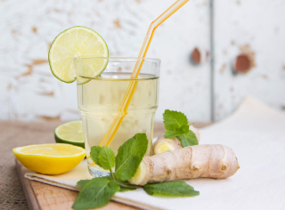

Напитки

Имбирный лимонад
Вкусный с горьчинкой лимонад, освежающий в любую погоду.
Чай из листьев черной смородины
Ароматный и приятный напиток можно приготовить, заварив листья черной смородины. В него
также можно добавить сушеные смородиновые ягоды, варенье из смородины или смородину,
протертую с сахаром.

Блюда стран мира
Ликёр "Лимончелло"
Лимонче́лло (итал. Limoncello) – это итальянский лимонный ликёр, который получают путем
настаивания кожуры сочных лимонов побережья Амальфи в спирте. Можно приготовить этот вкусный
напиток дома, ведь лимоны и водка – это всё, что нужно для его приготовления.
Блюда стран мира
Какао-флип
Необычный вариант какао, приготовленного на молоке, с добавлением яичного желтка. Желток
придаёт какао аппетитную густоту и позволяет при взбивании получить пышный слой шелковистой
пенки.